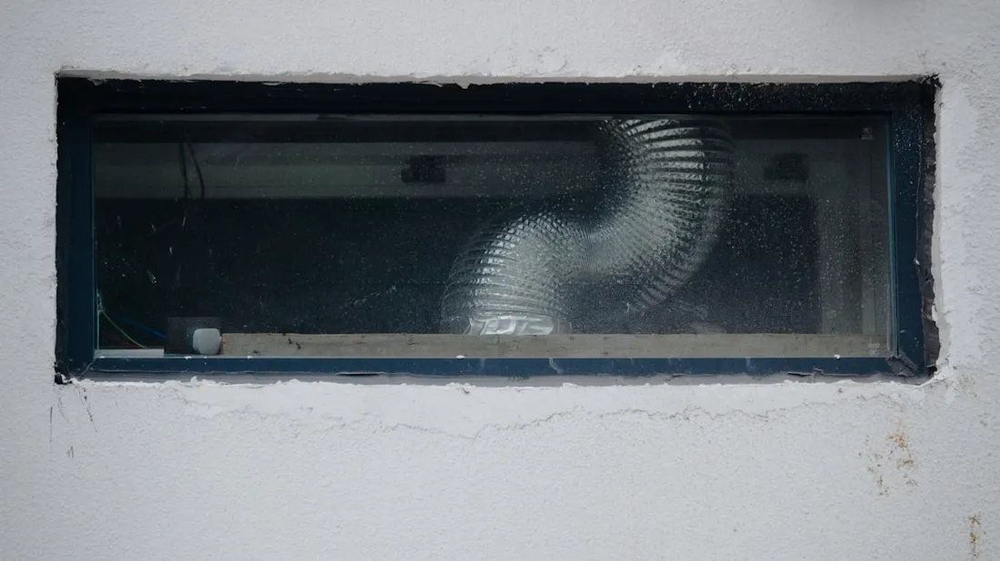

Musty smell coming from your vents? Here’s what our mold removal and duct sanitizing service in Atlanta actually involves.
Duct mold removal in Atlanta clears mold and mildew growth from inside HVAC ductwork and treats the surface with an EPA-registered antimicrobial to stop it from coming back. It’s a common need in a city where summer humidity regularly sits above 60–70%, giving moisture a real chance to take hold anywhere ductwork isn’t fully sealed.

After a full inspection confirms mold and identifies the moisture source, the ductwork is cleaned using negative-pressure vacuum equipment to remove loose mold and debris, then treated with an EPA-registered antimicrobial solution designed for HVAC systems. If a moisture source like a clogged condensate line is found, we’ll flag it so it can be fixed — treating mold without fixing the moisture source just means it comes back.
Mold needs moisture to grow, and ductwork picks up moisture from a few common sources: condensation on poorly insulated duct sections, a clogged or improperly sloped condensate drain line, or humid air infiltrating from an unsealed crawl space. This region’s long, humid summer season means ducts stay in a moisture-friendly environment for months at a time if any of these issues go unaddressed.
Mold removal and sanitizing typically adds $150 to $300 on top of a standard air duct cleaning appointment. The main cost factors are how widespread the mold is throughout the system, whether flex ductwork sections are affected (sometimes requiring replacement rather than cleaning), and whether the underlying moisture source also needs attention.
Right for you when mold is on the surface of metal ductwork or hasn’t soaked deep into insulation — the majority of cases we see in Atlanta homes.
Needed when mold has saturated the insulation lining of flex ductwork or when a section has sustained ongoing water damage that cleaning alone can’t resolve. We’ll tell you honestly if this applies during inspection.
A persistent musty odor when your HVAC system runs, visible dark or greenish spots around vent covers, or worsening allergy symptoms that improve when you leave the house are the most common signs. A history of moisture issues in your attic or crawl space also raises the odds.
Duct mold removal and sanitizing in Atlanta typically adds $150 to $300 on top of a standard duct cleaning, depending on how widespread the mold is and whether the moisture source also needs to be addressed.
In most cases, yes — an EPA-registered antimicrobial treatment applied after thorough cleaning eliminates surface mold on metal ductwork. Flex ductwork with mold soaked deep into the insulation lining sometimes needs section replacement rather than just cleaning.
Mold needs moisture, and ductwork gets moisture from condensation on poorly insulated sections, a clogged condensate drain line, or humidity infiltrating from an unsealed crawl space. Atlanta’s humid summers make moisture-related duct issues more common here than in drier regions.
Cooling system running but not cooling well? Check our AC coil cleaning service or see our full list of services.
Call now for a free phone estimate on duct mold removal in Atlanta.